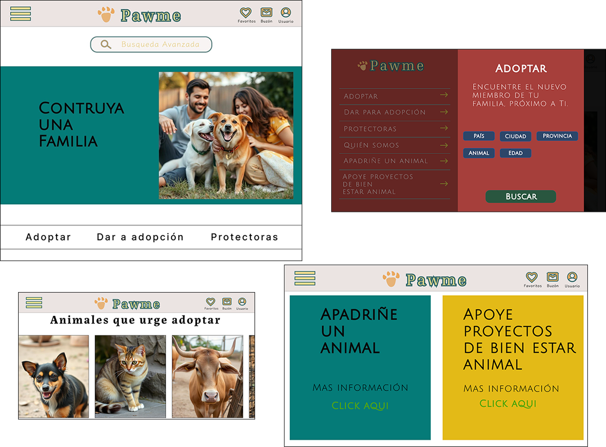
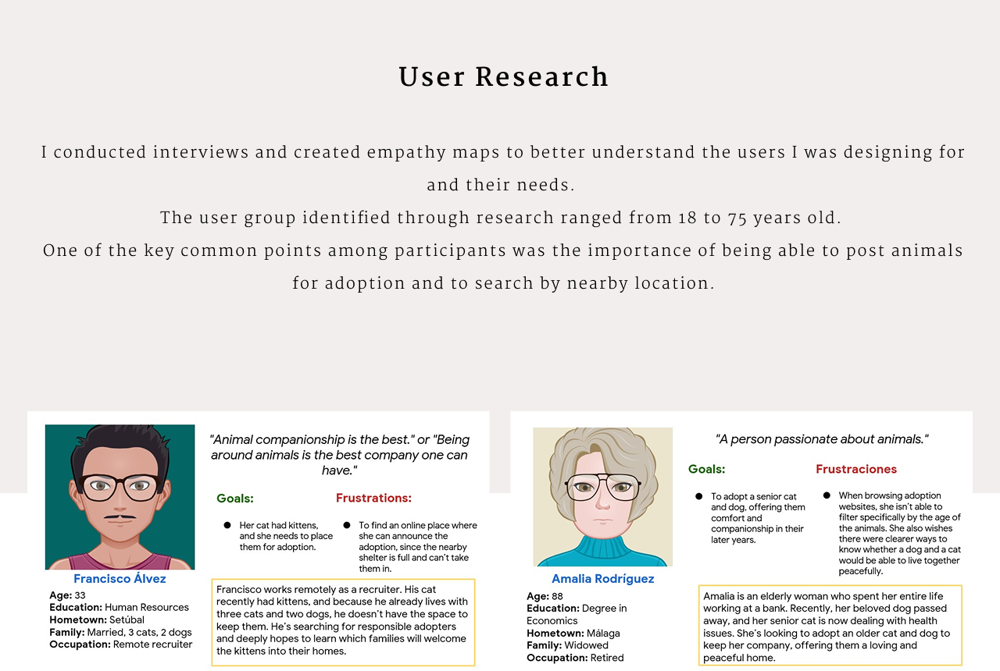
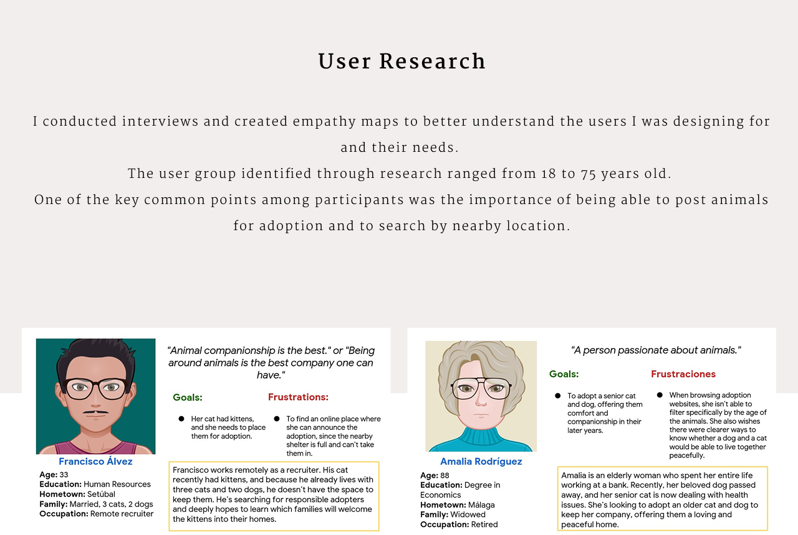
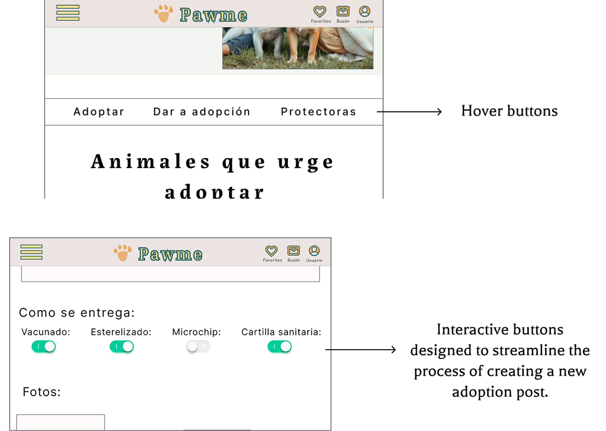
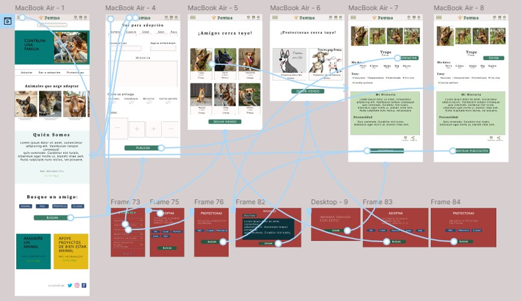
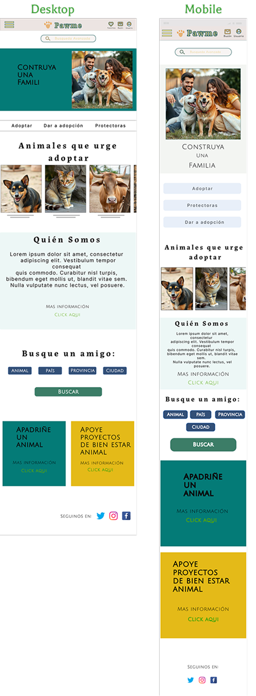

Pet Adoption Website
Is an animal adoption website that includes everything from domestic pets to farm animals. The platform allows all users to post animals available for adoption.
January 2025 to February 2025
UI/UX Designer, from ideation to final delivery.
 

The usability study revealed several key findings:
• The ability to find farm animals available for adoption.
• The need to post animals for adoption.
• Interest in advanced search filters such as age, breed, and location.
• The importance of locating nearby animal shelters.
Built a low-fidelity prototype based on the complete set of digital wireframes, enabling early-stage testing and iteration of the layout and functionality.

From the hamburger menu, users can select: Animals for adoption, Put up an animal for adoption, and Search for nearby animal shelters.
On the homepage, users can also search for: Animals available for adoption, Post an animal for adoption, and Find nearby animal shelters.
Based on the results of the usability studies, the high-fidelity prototype was refined to include critical user insights. In addition, visual and functional adjustments were made to enhance the overall navigation experience.
 
From the hamburger menu, users can select: Animals available for adoption, Post an animal for adoption, and Find nearby animal shelters.
The homepage includes quick-access search options, allowing users to browse animals available for adoption, create adoption listings, or locate nearby animal shelters—streamlining user interaction right from the start.
Users can select an animal available for adoption and contact the poster directly via messaging.
The designs were adapted to various screen sizes, covering both mobile devices and desktop computers. I optimized the layouts to meet the specific needs of users on each platform, maintaining consistent structure across formats while applying necessary adjustments for each screen type.
Pawme creates a positive impact by bridging the gap between animals in need of a home and families seeking to grow with new members.
The platform makes adoption easier and more heart-centered for everyone involved, creating meaningful connections between animals and caring families.
One of the main lessons I learned during the Pawme project was the importance of language. It was particularly challenging because I wasn't designing for a product, but for living beings. Choosing the right words—words that honor animals as sentient beings rather than objects—was essential in crafting a respectful and compassionate experience.